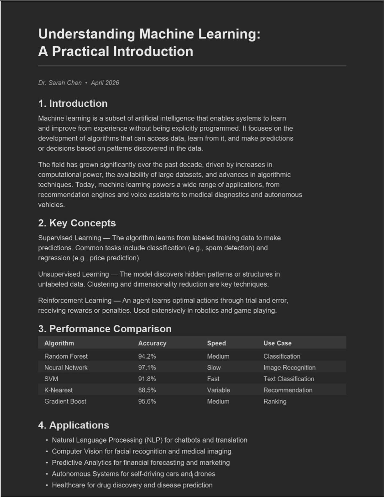
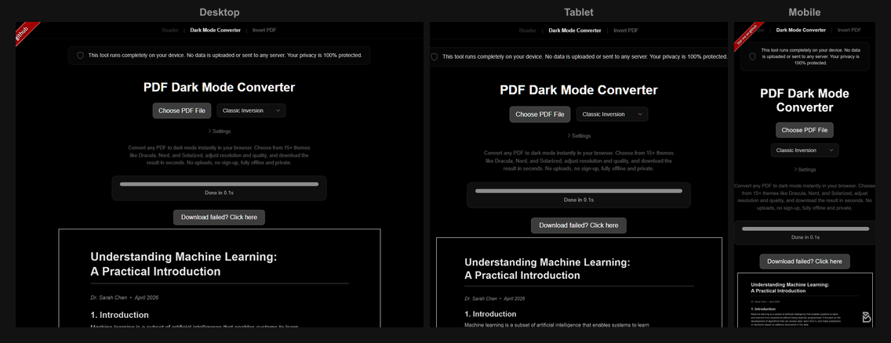

Leggere PDF di notte senza affaticare gli occhi
Risposta rapida: Il modo migliore per leggere PDF di notte combina due cose: ridurre la luminosita e la luce blu dello schermo con la modalita notturna del sistema e convertire il PDF in modalita scura per avere pagine scure con testo chiaro. Questo elimina la causa principale dell'affaticamento visivo: una pagina bianca brillante che ti abbaglia in una stanza buia.
Perche i PDF bianchi di notte sono aggressivi per i tuoi occhi
Un PDF standard ha testo nero su sfondo bianco. Di giorno, con molta luce ambientale, e perfettamente confortevole da leggere. Ma di notte, specialmente in una stanza buia o poco illuminata, quello sfondo bianco si trasforma in una torcia puntata in faccia.
Il problema e il contrasto. Non il contrasto tra testo e sfondo, che e ottimo, ma il contrasto tra lo schermo luminoso e la stanza buia intorno a te. Le tue pupille si dilatano in ambienti poco illuminati per catturare piu luce, e una pagina PDF bianca le inonda con molta piu luce di quanta possano gestire. Il risultato: affaticamento visivo, mal di testa, difficolta a mettere a fuoco e talvolta problemi ad addormentarsi.
Ridurre la luminosita dello schermo aiuta, ma solo fino a un certo punto. Anche al minimo, uno sfondo bianco emette significativamente piu luce di uno scuro. L'approccio piu efficace e scurire la pagina stessa.
Passo 1: Attiva la modalita notturna del tuo sistema
Tutti i principali sistemi operativi hanno una modalita notturna integrata che riduce l'emissione di luce blu rendendo i colori dello schermo piu caldi. Questa e la base per qualsiasi uso notturno dello schermo, che tu stia leggendo PDF, navigando sul web o guardando video.
- Windows: Impostazioni > Sistema > Schermo > Luce notturna. Puoi impostarla per attivarsi automaticamente al tramonto.
- macOS: Preferenze di Sistema > Schermi > Night Shift. Impostala da tramonto ad alba.
- iOS: Impostazioni > Schermo e luminosita > Night Shift.
- Android: Impostazioni > Display > Luce notturna (o 'Comfort visivo' sui dispositivi Samsung).
La modalita notturna sposta la temperatura colore del tuo schermo verso toni piu caldi (piu giallo/arancione, meno blu). La luce blu ha il maggiore impatto sul ritmo sonno-veglia e puo disturbare il sonno, quindi ridurla e particolarmente utile per la lettura notturna.
La modalita notturna pero non cambia la luminosita ne il colore delle pagine del tuo PDF. Colora semplicemente l'intero schermo. Un PDF bianco diventa un PDF giallastro-bianco: un po' meglio, ma comunque scomodamente luminoso. Devi intervenire sul PDF stesso.
Passo 2: Converti il tuo PDF in modalita scura
Questo e il cambiamento che fa la differenza maggiore. Invece di leggere pagine bianche con un filtro colore sopra, converti il PDF in modo che le pagine siano realmente scure. Il PDF Dark Mode Converter lo fa in pochi secondi:
- Apri il convertitore in qualsiasi browser.
- Trascina il tuo PDF sulla pagina.
- Scegli un tema. Per la lettura notturna, 'Warm Dark' o 'Dark' sono particolarmente adatti, perche usano colori morbidi a basso contrasto che sono delicati per gli occhi.
- Scarica il file convertito.
La conversione avviene interamente nel tuo browser. Nulla viene inviato, nulla lascia il tuo computer. Lo strumento e gratuito, open source e accelerato dalla GPU per un'elaborazione veloce anche con documenti lunghi.
Dopo la conversione, il PDF mostra testo chiaro su sfondo scuro. Combinato con la modalita notturna del tuo sistema, e il massimo comfort che la lettura a schermo puo offrire.

Passo 3: Regola la luminosita dello schermo
Anche con un PDF in modalita scura, la luminosita dello schermo conta. La maggior parte delle persone tiene la luminosita molto piu alta del necessario per l'uso notturno. Prova a ridurla notevolmente, piu del solito. Con un PDF scuro, hai bisogno di pochissima luminosita per leggere comodamente.
Un buon punto di riferimento: il tuo schermo non dovrebbe essere notevolmente piu luminoso della luce ambientale nella tua stanza. Se riesci a vedere il bagliore dello schermo sul tuo viso dall'altra parte della stanza, e troppo luminoso.
Alcuni consigli extra sulla luminosita:
- Usa la luminosita automatica su smartphone e tablet. Il sensore di luce ambientale regola la luminosita in tempo reale, il che e piu reattivo della regolazione manuale.
- Su laptop e desktop abbassa la luminosita manualmente al 30-40% per la lettura notturna. In combinazione con un PDF in modalita scura, quasi non noterai lo schermo.
- Considera una retroilluminazione. Una piccola lampada dietro il monitor o la TV fornisce una luce ambientale morbida che riduce il contrasto tra schermo e stanza. E uno dei modi piu semplici ed efficaci per ridurre l'affaticamento visivo.
Passo 4: Ottimizza il tuo ambiente di lettura
Oltre alle impostazioni dello schermo, l'ambiente fisico di lettura fa una grande differenza:
- Non leggere nel buio totale. E tentante spegnere tutte le luci, ma l'estremo contrasto tra uno schermo luminoso e una stanza completamente buia e la cosa peggiore per i tuoi occhi. Lascia una luce soffusa accesa da qualche parte nella stanza.
- Tieni lo schermo a distanza di braccio. Tenere il telefono a 15 centimetri dal viso amplifica ogni raggio di luce che raggiunge i tuoi occhi. Tieni il dispositivo piu lontano o appoggialo a una distanza confortevole.
- Ingrandisci il carattere/zoom. Invece di sporgerti per leggere testo piccolo, ingrandisci in modo da poter leggere comodamente dalla distanza normale. Nella maggior parte dei lettori PDF, usa il gesto di pinch sul telefono o Ctrl+= sul computer. Testo piu grande significa meno sforzo per gli occhi e quindi meno affaticamento.
- Fai delle pause. La regola 20-20-20 e semplice ed efficace: ogni 20 minuti guarda qualcosa a 6 metri di distanza per 20 secondi. Questo rilassa i muscoli oculari.
E l'inversione colori di sistema?
Sia Windows che macOS hanno impostazioni di accessibilita che invertono tutti i colori dello schermo. Questo trasforma gli sfondi bianchi in scuri e ti da tecnicamente una 'modalita scura' per qualsiasi PDF. Tuttavia, anche le immagini, i grafici e gli elementi di navigazione vengono invertiti, facendo apparire tutto strano. Confrontiamo questi due approcci in dettaglio nel nostro articolo su Modalita scura vs. inversione colori.
L'inversione di sistema e una soluzione d'emergenza utile, ma per la lettura notturna regolare, una vera conversione del PDF e nettamente migliore. Ottieni risultati puliti con colori leggibili, immagini intatte e una scelta di temi che si adattano alle tue preferenze.
Consigli specifici per dispositivo
Il dispositivo su cui leggi gioca un ruolo importante. Ogni dispositivo ha i propri punti di forza e le proprie particolarita per la lettura notturna dei PDF:
- iPad: Il grande schermo e ideale per i PDF. Usa Night Shift insieme a un PDF in modalita scura per la migliore esperienza. Consulta la nostra guida alla modalita scura su iPad.
- iPhone: Lo schermo piu piccolo significa piu zoom e scorrimento. Converti il PDF e ingrandisci per non sforzare gli occhi. Consulta la nostra guida per iPhone.
- Android: La maggior parte dei dispositivi Android ha robuste impostazioni di luce notturna. Combinale con un PDF convertito per risultati eccellenti. Consulta la nostra guida per Android.
- PC Windows: Usa la luce notturna con una retroilluminazione dietro il monitor. Abbiamo una guida dettagliata per Windows con opzioni aggiuntive.

Conclusione
Leggere comodamente i PDF di notte si riduce a tre cose: ridurre la luce blu (modalita notturna del sistema), scurire il contenuto (convertire il PDF) e controllare la luminosita (schermo e stanza). Nessuno di questi passaggi e complicato, e insieme fanno un'enorme differenza.
Non hai bisogno di app speciali, software costosi o configurazioni complicate. Un convertitore gratuito, un'impostazione di luminosita e un interruttore per la modalita notturna: e tutto cio che serve.
Stai leggendo un PDF stasera? Convertilo prima in modalita scura: i tuoi occhi ti ringrazieranno. Gratuito, immediato e privato.
Domande Frequenti
Leggere PDF bianchi e luminosi in una stanza buia causa affaticamento visivo a causa dell'estremo contrasto tra lo schermo e l'ambiente circostante. I PDF in modalita scura riducono notevolmente questo affaticamento.
La modalita notturna riduce la luce blu, il che aiuta ad addormentarsi, ma non scurisce lo sfondo del PDF. Combinare la modalita notturna con un PDF in modalita scura offre i migliori risultati.
Converti il PDF in modalita scura, attiva la luce notturna del tuo sistema per ridurre la luce blu, abbassa la luminosita dello schermo e mantieni un'illuminazione ambientale soffusa nella stanza.